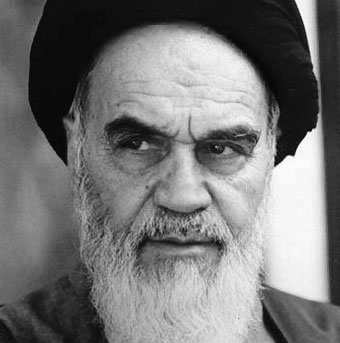
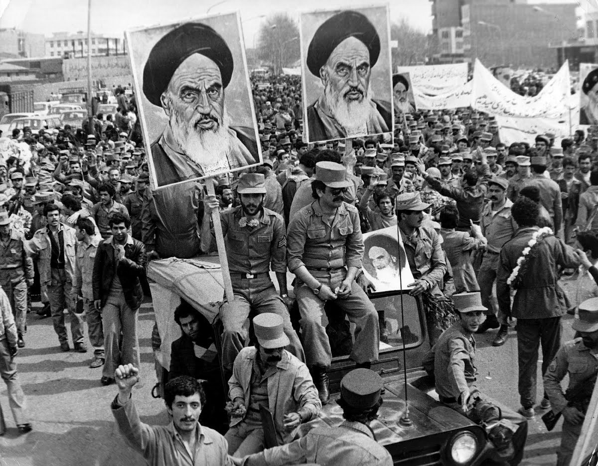
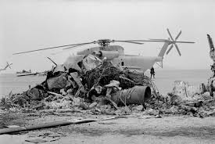
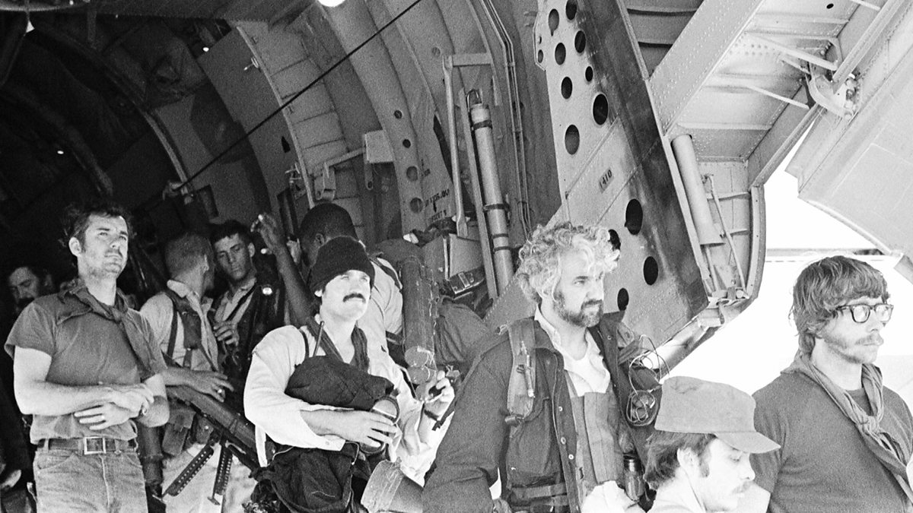
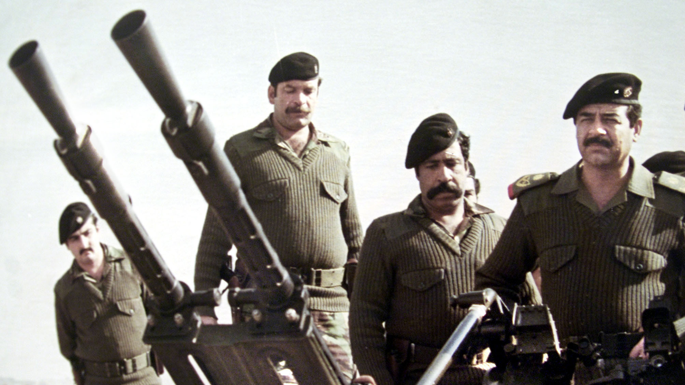
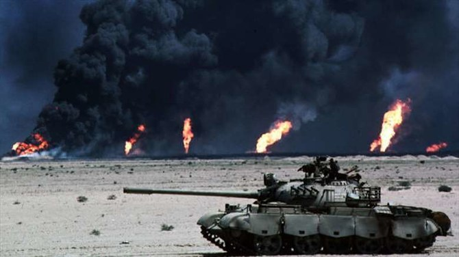
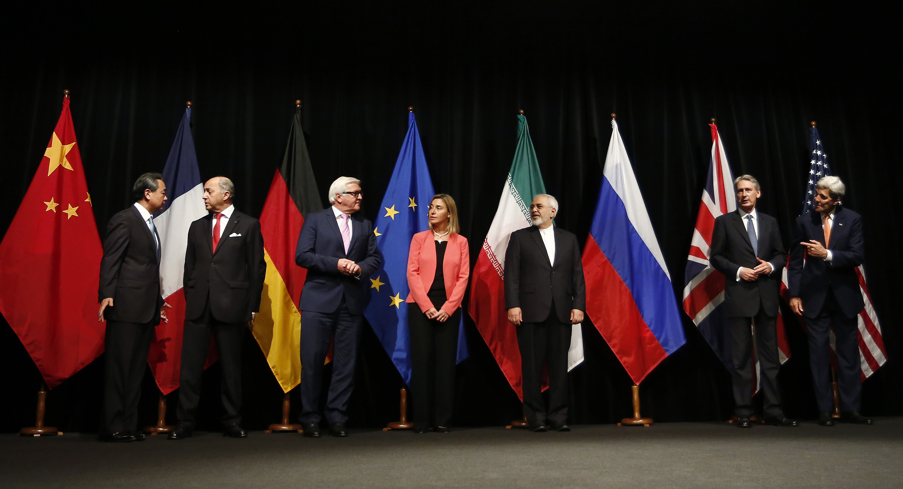
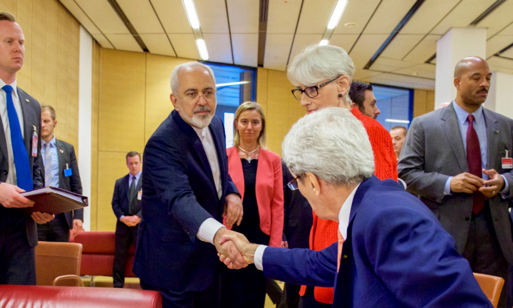
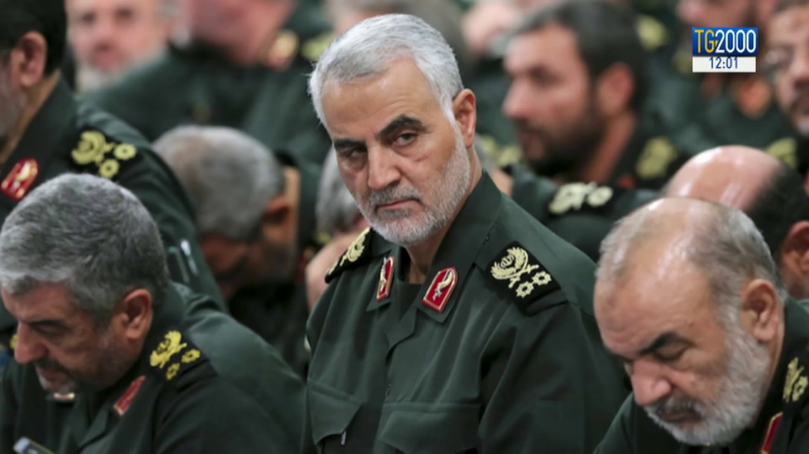
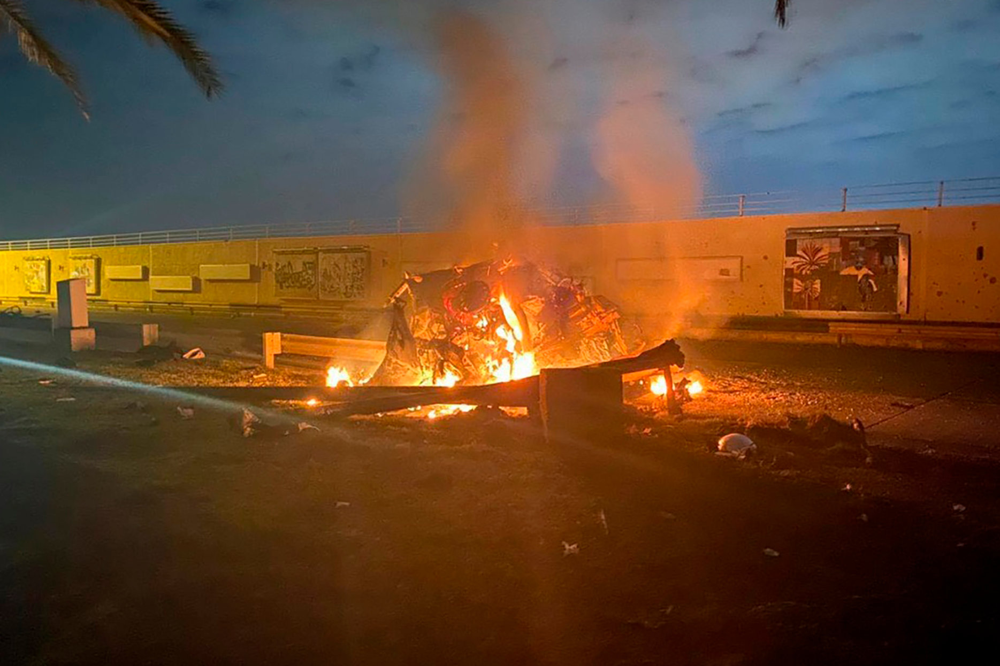

Una tensión que moldea el orden mundial
Durante décadas, el enfrentamiento entre Washington y Teherán ha definido la geopolítica de Medio Oriente. No es solo un conflicto bilateral: es el eje alrededor del cual giran las rutas energéticas globales, el equilibrio militar regional y los intereses de las grandes potencias. Tres factores explican por qué este conflicto te afecta aunque vivas a miles de kilómetros.
Irán ocupa el corazón geográfico de Medio Oriente: fronteras en el Caspio, el Golfo Pérsico y el Golfo de Omán. Su posición hace que cualquier tensión afecte directamente las arterias del comercio global de energía.
El Golfo Pérsico mueve el 30% del petróleo marítimo mundial, distribuido en tres rutas principales hacia Asia, Europa y América.
Con apenas 33 km de ancho en su punto más estrecho, Ormuz es el cuello de botella energético del planeta. 21 millones de barriles diarios — el 20% del gas mundial — pasan por aquí sin alternativa.
Irán comparte ambas orillas con Omán. Ha amenazado en múltiples ocasiones con bloquearlo como palanca de negociación frente a sanciones. Un cierre de 30 días elevaría el crudo un 40–60%.
Washington mantiene más de 35,000 efectivos en bases que rodean Irán por todos los flancos. Una arquitectura de disuasión construida durante tres décadas.
No fue un choque inevitable. Fue una acumulación de decisiones, traiciones y crisis que durante cuatro décadas fueron construyendo un muro de desconfianza irreversible. La respuesta está en la historia.


Durante más de dos décadas, el sha Mohammad Reza Pahlaví gobernó Irán como un aliado estratégico de Washington. La CIA había participado en 1953 en el golpe que lo restauró en el poder, y a cambio, Teherán garantizaba estabilidad regional, flujo petrolero y una posición pro-occidental en plena Guerra Fría.
Todo eso colapsó en febrero de 1979. Una revolución popular liderada por el ayatolá Ruhollah Khomeini derrocó al sha y proclamó la República Islámica de Irán. El nuevo régimen convirtió a Estados Unidos —al que llamaba el "Gran Satán"— en su principal adversario ideológico y estratégico.
El impacto fue inmediato: Washington perdió su principal socio en el Golfo Pérsico, acceso privilegiado al petróleo iraní y décadas de inversión en inteligencia regional. Para Irán, la revolución fue el inicio de un proyecto de poder que buscaría expandirse a través de aliados y milicias por todo el Medio Oriente.


El 4 de noviembre de 1979, centenares de estudiantes iraníes asaltaron la embajada estadounidense en Teherán. Tomaron como rehenes a 52 diplomáticos y personal consular. El detonante inmediato fue la decisión de Washington de admitir al sha en suelo estadounidense para recibir tratamiento médico.
Lo que siguió fue una crisis de 444 días que humilló a la administración Carter, frustró un rescate militar fallido —la operación Eagle Claw terminó en desastre en el desierto iraní con ocho soldados muertos— y terminó con las relaciones diplomáticas entre ambos países de forma definitiva.
Los rehenes fueron liberados el 20 de enero de 1981, minutos después de que Ronald Reagan prestara juramento como presidente. La sincronización fue interpretada como un mensaje político deliberado de Teherán a Washington. Desde entonces, ningún embajador estadounidense ha pisado suelo iraní.


En septiembre de 1980, Saddam Hussein invadió Irán con el respaldo tácito de Washington, que veía en Irak un contrapeso al nuevo régimen islamista. Estados Unidos proporcionó a Bagdad inteligencia satelital, créditos y precursores químicos que serían usados contra tropas iraníes.
La guerra duró ocho años y costó entre 500,000 y un millón de vidas. Irán la libró con una combinación de movilización masiva, milicias voluntarias y una doctrina de "guerra de desgaste" que marcó su pensamiento estratégico posterior. Fue entonces cuando Teherán comenzó a desarrollar el modelo de proxy warfare: apoyar milicias aliadas en países vecinos como extensión de su propio poder.
Al final del conflicto, Irán no había ganado territorialmente, pero había construido la infraestructura ideológica y militar que hoy articula su influencia desde el Líbano hasta Yemen. La Fuerza Quds del IRGC, creada en este período, sería el instrumento central de esa proyección de poder.


Después de años de sanciones internacionales y tensiones crecientes por el programa nuclear iraní, el 14 de julio de 2015 se firmó en Viena el Joint Comprehensive Plan of Action. Irán se comprometía a reducir su capacidad de enriquecimiento de uranio y aceptar inspecciones internacionales a cambio del levantamiento progresivo de sanciones.
El acuerdo, negociado bajo la administración Obama con la participación del grupo P5+1 —los cinco miembros permanentes del Consejo de Seguridad más Alemania—, fue celebrado como un logro diplomático histórico. La economía iraní recibió un impulso inmediato: el petróleo volvió a fluir hacia Europa y se liberaron activos congelados por más de 100,000 millones de dólares.
Pero el acuerdo no sobrevivió al cambio político en Washington. En mayo de 2018, la administración Trump se retiró unilateralmente del JCPOA y reimplantó sanciones máximas. Irán respondió gradualmente reactivando su programa nuclear. En 2024, la Agencia Internacional de Energía Atómica confirmó que Teherán enriquecía uranio al 60%, a un paso técnico del grado armamentístico.


En la madrugada del 3 de enero de 2020, un dron MQ-9 Reaper del ejército estadounidense lanzó un misil sobre un convoy en el aeropuerto de Bagdad. Entre los muertos estaba el general Qasem Soleimani, comandante de la Fuerza Quds del IRGC y el arquitecto más influyente de la estrategia regional iraní durante dos décadas.
Soleimani había construido y coordinado la red de milicias que hoy constituye el "Eje de Resistencia" iraní: Hezbollah en el Líbano, las milicias chiíes en Irak, los Houthis en Yemen, Hamas y la Yihad Islámica en Gaza. Su eliminación fue el acto más agresivo de Washington contra un oficial iraní en la historia del conflicto bilateral.
La respuesta de Irán llegó cinco días después: un bombardeo con misiles balísticos sobre bases estadounidenses en Irak que dejó a más de 100 soldados con lesiones cerebrales traumáticas. El mundo contuvo el aliento ante la posibilidad de una guerra abierta. No ocurrió —ninguno de los dos lados quería la escalada total— pero el episodio demostró que el conflicto había entrado en una nueva fase de confrontación directa sin mediaciones.
Diez dimensiones del enfrentamiento entre Washington y Teherán: estrategia, costos, proxies, energía y los tres futuros posibles.
El conflicto entre Irán y EE.UU. no surge en el vacío. Todo empieza con la invasión rusa a Ucrania: Moscú concentra recursos allá y deja otros frentes abiertos.
Siria pierde respaldo ruso. Azerbaiyán recupera Nagorno-Karabakh. EE.UU. gana libertad estratégica en Oriente Medio. Cuando una superpotencia se enfrasa en una guerra, los demás actores aprovechan el espacio.
EE.UU. e Israel apostaron por operaciones rápidas: destruir infraestructura militar, neutralizar al liderazgo iraní. La tecnología es aplastante. Pero las guerras modernas no se ganan solo con potencia de fuego.
Irán aplica una estrategia de costos asimétrica: obligar al adversario a gastar desproporcionadamente en defensa. Defenderse sale más caro que atacar.
Irán no puede enfrentar a EE.UU. en un choque convencional. Apunta a los socios regionales americanos: Arabia Saudita, Emiratos, Qatar y Bahréin.
Las plantas desalinizadoras —que abastecen el 90% del agua potable del Golfo— son el blanco más estratégico. Un ataque crea crisis humanitaria en 72 horas y fuerza a los aliados a presionar a Washington.
El 20% del petróleo transportado por mar transita el Estrecho de Ormuz. No hace falta un bloqueo real: la amenaza creíble dispara los precios globales en horas.
Asia es la región más expuesta. Un bloqueo no es solo una crisis energética: es una crisis de crecimiento simultánea en las cuatro mayores economías del continente.
EE.UU. históricamente busca conflictos cortos y decisivos. Su ventana política es de meses, no de años. La opinión pública, el Congreso y los mercados toleran escaladas breves, no guerras prolongadas.
Irán diseñó su estrategia sabiendo esto. Su régimen puede absorber sufrimiento durante años sin enfrentar elecciones. Ya sobrevivió 8 años de guerra con Irak y décadas de sanciones.
Mientras EE.UU. gasta capital político y militar en Oriente Medio, y Rusia se consume en Ucrania, China adopta la estrategia del observador estratégico: dejar que los rivales se desgasten.
El resultado no es pasivo: compra petróleo iraní con descuento, expande la Belt and Road Initiative, y en 2023 brokereó el acuerdo de reanudación diplomática entre Irán y Arabia Saudita. EE.UU. no fue invitado.
El régimen no es una estructura frágil. La Guardia Revolucionaria (IRGC), el ejército regular y el Basij forman una tríada que controla simultáneamente seguridad, economía y narrativa interna.
Irán tiene instalaciones militares subterráneas, terreno montañoso (Zagros y Alborz) que frustra operaciones terrestres y una cultura de resistencia forjada en 8 años de guerra con Irak.
Irán no necesita ganar militarmente a EE.UU. Le basta con multiplicar los frentes hasta que el costo político, logístico y económico sea insostenible para Washington.
Hezbollah en Líbano, Houthis en Yemen, milicias en Irak, Hamas en Gaza: ninguno puede derrotar al ejército americano. Pero juntos obligan a EE.UU. a distribuir recursos en cuatro direcciones simultáneamente. El objetivo no es la victoria: es el agotamiento.
No hace falta un bloqueo de Ormuz para desestabilizar los mercados. Pequeños ataques, amenazas creíbles o sabotajes pueden disparar el crudo 30–40% en semanas.
El mecanismo es directo: petróleo caro → inflación global → presión sobre bancos centrales → tipos altos → recesión latente. La geopolítica del Golfo llega a los bolsillos de ciudadanos de 190 países.
El resultado final no depende únicamente de la capacidad militar. La resistencia interna, la economía global y la paciencia estratégica de cada actor determinarán cuál de los tres escenarios se materializa.
Ningún escenario es inevitable. Cada uno depende de decisiones políticas que aún no se han tomado, y de accidentes que nadie puede predecir.